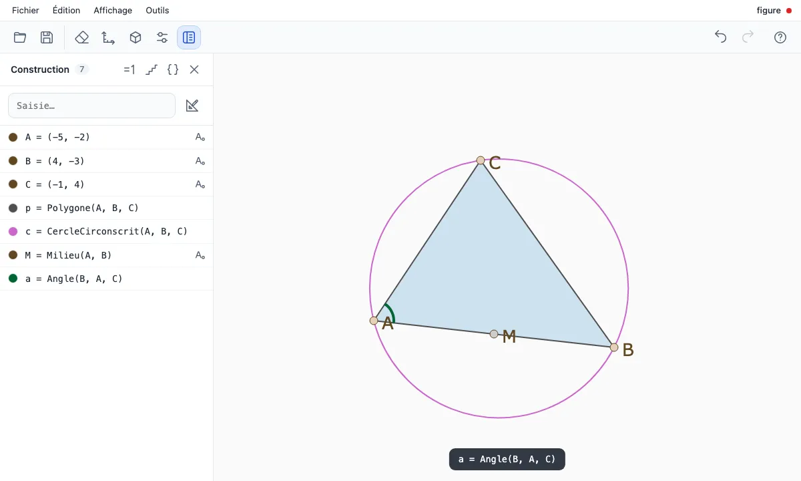
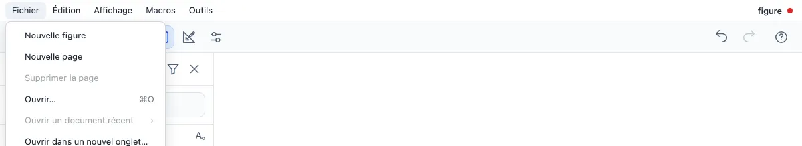

L’interface

La barre de menus

| Menu | Commandes |
|---|---|
| Fichier | Nouvelle figure, Nouvelle page, Supprimer la page (classeurs), Ouvrir… (Ctrl O), Ouvrir un document récent, Enregistrer (Ctrl S), Enregistrer sous… (Ctrl Maj S), Intégrer dans une page web…; Nouvelle vue, Supprimer la vue, Déplacer la vue à gauche, Déplacer la vue à droite (vues) |
| Édition | Annuler, Refaire, Supprimer, Gomme |
| Affichage | Repère, Vue 3D, Historique de la construction, Palette d’outils, Propriétés, Plein écran (Échap pour en sortir) : une coche montre ce qui est affiché |
| Outils | Manuel d’utilisation, DocTools, Licence & GitHub, À propos… |
À droite, le nom du fichier de la figure, dans Chrome et Edge (enregistrer). La barre de menus n’apparaît pas quand DocGeo est intégré à une autre page, comme DocTools.
La barre d’actions
| Bouton | Rôle | |
|---|---|---|
| Ouvrir |
.dgo, .dgp,
.ggb
|
|
| Enregistrer | en .dgo |
|
| Gomme | cacher ou montrer des objets (gomme) | |
| Repère | axes et grille ; en 3D, trièdre et sol | |
| Vue 3D | passer dans l’espace ou revenir au plan (3D) | |
| Palette d’outils | panneau de droite des outils (palette) | |
| Propriétés | panneau de droite (propriétés) | |
| Construction | panneau de gauche | |
| Annuler, Refaire | Ctrl Z, Ctrl Maj Z ou Ctrl Y | |
| Manuel d’utilisation | ouvre le manuel dans la langue de DocGeo, dans un nouvel onglet |
Au centre, la zone contextuelle donne le nom et les actions de l’objet sélectionné.
Le panneau « Construction »
-
Une ligne par objet, dans l’ordre de construction :
M = Milieu(A, B). Chaque ligne se modifie (redéfinition). - La pastille de début de ligne cache ou montre l’objet ; en fin de ligne affiche son nom. La pastille d’un point reprend sa forme et ses couleurs.
- ouvre sa définition dans les propriétés.
- Au survol de chaque ligne, supprime l’objet et ses dépendants. Cette action peut être annulée.
- En-tête : nombre d’objets, valeurs, pas à pas, filtres.
- Ligne de saisie « Saisie… » ; sous 500 px de large, le bouton de la palette s’y ajoute.
- Survoler une ligne fait briller l’objet, et inversement.
La consigne
La bulle au bas de la figure indique ce qui est attendu (« Désignez un point »), la ligne que l’outil va écrire, et les erreurs en rouge. Sa croix ✕ abandonne l’outil en cours.
Naviguer
| Action | Geste |
|---|---|
| Déplacer la vue | glisser le vide ; bouton droit n’importe où |
| Zoomer |
molette ou pavé tactile, autour du pointeur pincement à deux doigts : zoom autour du milieu des deux doigts |
| Tourner une figure 3D | bouton droit, ou un doigt dans le vide |
| Perspective, sol (3D) | P, S |
Le bouton rond en bas à gauche, présent quand la figure contient des animations, les met en pause ou les relance.
Plusieurs vues
Comme les graphiques de GeoGebra, une figure peut se montrer dans plusieurs vues, en colonnes côte à côte. La construction reste unique : chaque objet est dessiné dans une vue, et tout se met à jour en direct.
| Action | Comment |
|---|---|
| Ajouter une vue | Fichier › Nouvelle vue : une colonne de plus, à droite, avec les réglages de la vue active ; les colonnes prennent la même largeur |
| Activer une vue | la toucher : un liseré bleu marque son bord haut. Ce clic ne crée pas de point. |
| Redimensionner | tirer la séparation de deux colonnes |
| Changer l’ordre | Fichier › Déplacer la vue à gauche, Fichier › Déplacer la vue à droite |
| Supprimer | Fichier › Supprimer la vue : sa voisine prend sa place et ses objets |
- Un objet est créé dans la vue active, à l’outil comme par la ligne de saisie. Construit sur des objets d’une autre vue, il s’appuie sur leurs coordonnées dans la sienne.
- Chaque vue a ses propres réglages : Affichage › Repère et Affichage › Vue 3D, comme l’onglet « Figure », s’appliquent à la vue active. Une vue plane à côté d’une vue 3D montre la figure de dessus ; ses points, droites, segments et polygones n’y paraissent que s’ils sont dans le plan z = 0, comme dans le graphique de GeoGebra.
- Un curseur, une case, un menu, un champ de saisie ou un bouton qui dépasse le bord droit de sa vue, devenue plus étroite, se place contre ce bord, sans perdre sa position.
Ces actions s’annulent. Une figure GeoGebra à deux graphiques, ou dont le graphique est à côté de la vue 3D, s’ouvre en deux vues. Ce que GeoGebra montre dans les deux y est dessiné dans les deux.
Annuler
Toute modification est une étape d’une pile unique : construction, suppression, déplacement, style, réglage du repère, passage en 3D. Le zoom, le déplacement et la rotation de la vue n’en sont pas.
Les panneaux
- Leur bord intérieur se tire pour les redimensionner ; un double-clic rend la largeur par défaut.
- Sous 900 px de large, un seul panneau est ouvert à la fois ; à 600 px et moins, le panneau « Construction » démarre fermé et les propriétés recouvrent la figure, et choisir un outil referme les panneaux.